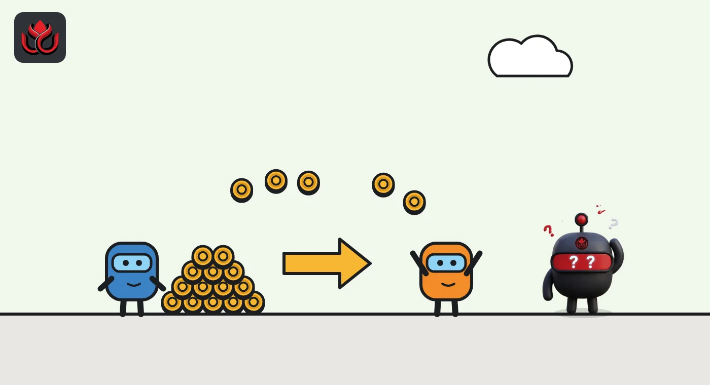
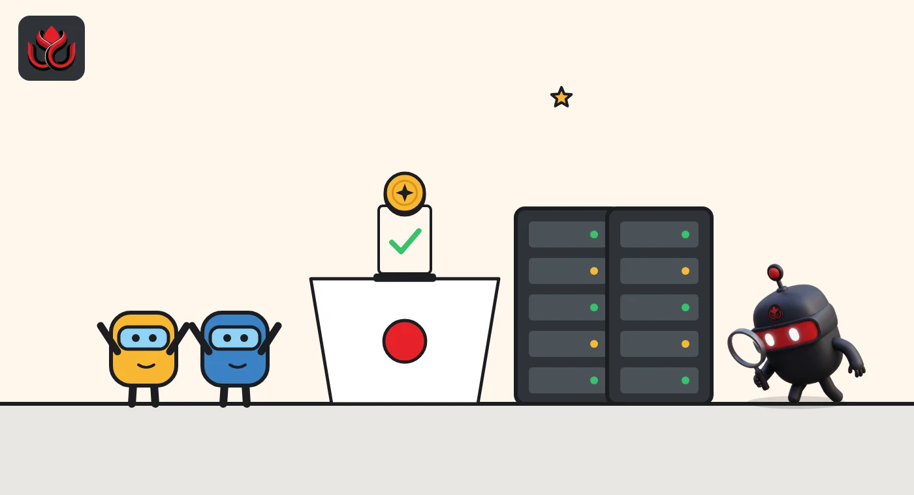

What is TRON? How the chain holding $92.6 billion of USDT really works
TRON is the blockchain where more of Tether's USDT lives than anywhere else: about $92.6 billion on November 2, 2026, per DefiLlama. Here is how its energy and bandwidth fees work, and why 27 elected block makers decide the rules.
Key points
- TRON holds more USDT than any other chain: about $92.6 billion on November 2, 2026, per DefiLlama, against about $72.7 billion on Ethereum.
- Fees come in two resources: bandwidth for a transaction's size and energy for smart contracts such as USDT transfers. Stake TRX to get them, or the network burns your TRX.
- Elected by TRX stakers, 27 Super Representatives make a block every 3 seconds. Rule changes need 18 of their votes.
What is TRON?
TRON is a public blockchain that its developer documentation describes as "a decentralized, open-source blockchain platform" with high throughput, low fees and EVM-compatible smart contracts. EVM stands for the Ethereum Virtual Machine, the software that runs Ethereum contracts. TRON's own version, the TVM, is "largely compatible" with it, so contracts written in Solidity can move over with few changes.
The same page puts block time at about 3 seconds and capacity at up to 2,000 transactions per second. Its coin is TRX, and the smallest unit is the sun. TRON's economic model page prices 1,000 sun at 0.001 TRX, so 1 TRX equals 1,000,000 sun.
Addresses look different from Ethereum's. A TRON address starts with a capital T, while an Ethereum address starts with 0x, per TRON's comparison page. Sending tokens to the wrong network format is a common way beginners lose funds. TRON also has two token standards: TRC-10, a native standard that runs without the TVM, and TRC-20, which works through smart contracts like Ethereum tokens. The comparison page says TRC-10 transfers are cheaper.
Why is TRON used for USDT?
TRON is the busiest home of Tether's USDT, the largest stablecoin (a token built to stay worth $1). In its State of TRON Q3 2026 release, published October 12, 2026, TRON DAO said:
- More than $94 billion of USDT circulated on TRON in October 2026, the largest USDT supply of any network.
- TRON settled $2.21 trillion in stablecoins in the third quarter, an average of $24.05 billion a day, up 3.9% from the second quarter.
- Network fees totaled $701.4 million in the quarter, about $7.62 million a day.
- Rolling monthly active addresses averaged 18 million.
These are TRON DAO's own figures about its own network. Independent data shows a lower USDT number today: as of November 2, 2026, DefiLlama counted about $92.6 billion of USDT on TRON, against about $72.7 billion on Ethereum, so TRON still holds the most. The reasons people pick TRON for USDT are mostly practical: fast blocks and a fee system that can make transfers cheap for wallets that stake TRX. LC Insight's guide Stablecoins explained: USDT vs. USDC covers how USDT itself works and who issues it.

How do energy and bandwidth fees work on TRON?
Ethereum charges one kind of fee, gas, paid in ETH. TRON splits costs into two resources, as its resource model page explains:
- Bandwidth pays for the size of a transaction in bytes. Every activated account gets 600 free bandwidth, which refills over 24 hours. That covers simple TRX transfers for light users.
- Energy pays for running smart contracts. A USDT transfer is a smart contract call, because USDT on TRON is a TRC-20 token. The docs say "Energy has no free quota."
There are two ways to get these resources. You can stake (lock) TRX, which gives you a share of the network's daily bandwidth or energy. Or you pay as you go: if you have no resources, the network burns your TRX instead. The TRON economic model page sets the burn price at 1,000 sun (0.001 TRX) per byte of bandwidth and 100 sun (0.0001 TRX) per unit of energy.
This is why a USDT transfer on TRON can cost very little for an account that has staked TRX or holds someone else's delegated energy, and more for an empty wallet that has to burn TRX.
What TRON burns when you have no resources
sun per unit
1 TRX = 1,000,000 sun. Source: TRON Developer Hub, economic model
Who runs TRON? Super Representatives explained
TRON uses delegated proof of stake (DPoS). TRX holders stake coins and vote for block producers called Super Representatives (SRs). The consensus page sets out how it works:
- 27 SRs produce blocks in a fixed rotation, one 3-second slot each, so a full round takes about 81 seconds.
- Votes come from TRON Power: on mainnet, staking 1 TRX gives 1 vote.
- The active set is recounted every 6 hours, so vote changes take effect at the next count.
- Candidates ranked 28th to 127th are "SR Partners": they cannot produce blocks but share in voter rewards.
SRs also govern. Network settings, such as fees, change through on-chain proposals that SRs vote on. A proposal passes with at least 18 approvals from the 27 active SRs.
Staking is widespread. Tronscan, a TRON block explorer, showed about 45.7 billion TRX staked as of its latest daily figure on November 2, 2026, which is roughly 48% of CoinGecko's supply count, by our arithmetic.

How many TRX are there, and is the supply shrinking?
TRX has no fixed cap. The economic model page says "the total supply is not fixed" and lists an initial distribution of 40 billion TRX in a public sale, 25.7 billion to private sale and early investors, and 34.3 billion to TRON DAO for ecosystem development, 100 billion in all.
Two forces move the supply. New coins are created with every block: 8 TRX to the SR that makes it and 128 TRX shared with voters across the top 127 candidates. With a block every 3 seconds, that is up to about 3.9 million new TRX a day, by our arithmetic. Fees burned for bandwidth and energy take coins out.
TRON's docs say supply peaked near 102 billion around mid-2022 and that since then, on most days, burning has outpaced new issuance. As of November 2, 2026, CoinGecko counted about 95.02 billion TRX in circulation, with TRX at about $0.317 and a market value of about $30.15 billion.
What are the risks?
- Few block producers. Only 27 SRs make blocks, and 18 of them can pass rule changes. Large TRX holders who vote can shape that set.
- Fees can change. Burn prices and resource limits are network settings that SRs can vote to change.
- Reliance on one stablecoin. Much of TRON's activity is USDT. Stablecoin issuers can freeze tokens at specific addresses, and any shift by Tether or by exchanges away from TRON would hit the network's main use.
- Wrong-network mistakes. TRON addresses and USDT contracts differ from Ethereum's. Sending to the wrong chain or address can mean lost funds.
- Self-reported data. Headline usage figures come from TRON DAO. Explorer data such as Tronscan helps check them.
LC Insight analysis
This section is our reading of the facts above, not a statement of fact.
- We think TRON's real product is cheap dollar transfers, not TRX. Its fee model rewards wallets and exchanges that stake TRX, which is why big USDT movers cluster there.
- That concentration cuts both ways. A network this dependent on one stablecoin inherits its issuer's decisions, from address freezes to which chains it favors.
- Governance deserves more attention than price. Eighteen votes from 27 block producers set fees and limits for a network that settled $2.21 trillion in stablecoins in one quarter, by TRON DAO's count.
What's next
- TRON DAO's Q4 2026 report and USDT supply on TRON.
- Any SR proposal that changes energy or bandwidth prices.
- Net TRX supply on Tronscan and CoinGecko: whether burns keep beating issuance.
Frequently asked questions
Is TRON proof of stake?
Yes. TRON uses delegated proof of stake: TRX stakers vote for 27 Super Representatives, who take turns producing blocks every 3 seconds.
What is energy on TRON?
Energy is the resource used to run smart contracts, including USDT transfers. You get it by staking TRX or by having someone delegate it to you; without it, the network burns TRX at 100 sun per unit.
How many TRX are there?
As of November 2, 2026, CoinGecko showed about 95.02 billion TRX in circulation. TRX has no maximum supply; TRON's docs say burns have mostly outpaced issuance since mid-2022.
How much USDT is on TRON?
As of November 2, 2026, DefiLlama counted about $92.6 billion of USDT on TRON, more than on any other chain. TRON DAO's October 12 report had put it above $94 billion.
Disclaimer. This article is based on public information and the sources listed below as of the update time shown. It is for information only and is not investment, legal or tax advice. Figures may change as companies and authorities publish new data.
Sources
- TRON Developer Hub, What is TRON
- TRON Developer Hub, Resource Model
- TRON Developer Hub, Consensus and DPoS
- TRON Developer Hub, TRON Tokenomics
- TRON DAO, State of TRON Q3 2026 Report (October 12, 2026)
- Tronscan (checked November 2, 2026)
- CoinGecko, TRON (November 2, 2026)
- DefiLlama, Tether (USDT) by chain (November 2, 2026)